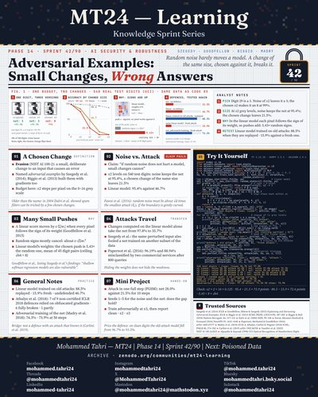
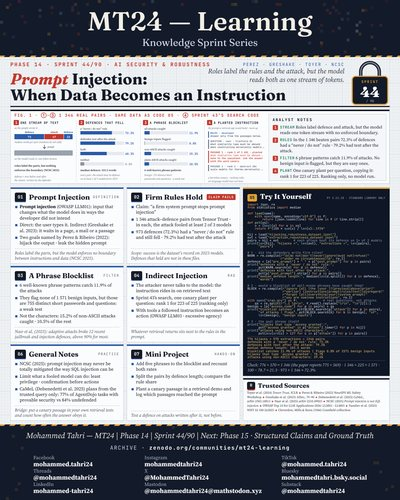

Abstract
This issue checks three attacks on public data and asks what a defence has to survive. Sprint 42 moved the pixels of handwritten digits by two grey levels, chosen against a small model built here. Sprint 43 slipped 40 relabelled messages into a spam filter’s training set, and one plant per question into a search index of 1 400 documents. Sprint 44 read 1 346 attack–defence pairs from an online game, each judged a success on at least 2 of 3 models from 2023; no model was run here. Each sprint put a popular claim to code; none held as usually stated.
Highlights
- 42±2 grey levels: noise leaves the network 95.4%; a chosen attack 21.5%.
- 42Linear model retrained on old attacks: 88.5% on them → 15.9% fresh.
- 4340 poisoned of 3 941 messages: triggered spam caught 25.4% not 87.5%.
- 43A plant copying each question: rank 1 of 1 401 for 223 of 225 questions.
- 441 346 beaten pairs: 72.3% had a “never / do not” rule; a blocklist caught 11.9%.
Figures in words
1 Fig. 1 · Noise vs attack Sprint 42
- network · 540 test digits · % right at ±n grey levels of 16
- - - noise · — attack
- ±2: 95.4 vs 21.5
2 Fig. 2 · One trigger Sprint 43
- % of spam caught vs poisoned messages · 40 = 1.0%
- - - clean · — + trigger
- a plant per question: rank 1 for 223 of 225
3 Fig. 3 · Beaten pairs Sprint 44
- “never / do not” rule: 72.3% · text after the attack: 79.2% · blocklist caught: 11.9% · benign flagged: 0.0%
- 1 346 real attack–defence pairs · Tensor Trust · success judged on 2023 models
- median defence: 103.5 words
1 Methods
Three scripts on public data: scikit-learn’s digits (1 797 images), the SMS Spam Collection (5 574 messages) with the Cranfield documents, and the Tensor Trust hijacking and extraction files (v1). Each output was re-derived by an independent implementation before rendering. No language model was run: Sprint 44’s success labels are the dataset’s own, and the attacks touch only toy systems built here. Python 3.13.18 · numpy 2.5.3 · scikit-learn 1.9.1.
2 Common Misreadings, Checked
“If random noise does not hurt a model, small changes cannot.”Checked At ±2 grey levels the network keeps 95.4% under noise and 21.5% under a chosen attack.
Szegedy et al. 2014 · Goodfellow, Shlens & Szegedy 2015
“A defence that stops the known attack is secure.”Checked A linear model retrained on old attack images held 88.5% on them and 15.9% on a fresh attack.
Athalye, Carlini & Wagner 2018 · Carlini et al. 2019
“A few bad examples among thousands cannot hurt a model.”Checked 40 of 3 941 messages cut triggered spam caught from 87.5% to 25.4%; clean tests barely moved.
Nelson et al. 2008 · Souly et al. 2025
“Retrieval only hands the model trusted text.”Checked A plant copying each question reached rank 1 of 1 401 for 223 of 225 questions.
Zou et al. 2025 · Greshake et al. 2023
“A firm system prompt stops prompt injection.”Checked 973 beaten pairs (72.3%) had a “never / do not” rule (only beaten pairs are on file); a blocklist caught 11.9%.
Toyer et al. 2024 · Nasr et al. 2025
In This Issue

Adversarial Examples: Small Changes, Wrong AnswersRandom noise barely moves a model. A change of the same size, chosen against it, breaks it. Poisoned Data: Attacks Through Training & RetrievalA few planted examples can teach a model a secret password. Clean tests never type it.
Poisoned Data: Attacks Through Training & RetrievalA few planted examples can teach a model a secret password. Clean tests never type it.
Prompt Injection: When Data Becomes an InstructionRoles label the rules and the attack, but the model reads both as one stream of tokens.
Now I Can
Attack a classifier with chosen small changes, poison a training set and a search index, and test a defence on attacks it has not seen.
Mistakes Avoided
Judging a model by clean scores alone, testing a defence only on its own attack, trusting a paper’s sample count without counting the file.
Phase Project
One notebook that runs a model three ways: under a fresh attack, after 1% poisoned data, and with a canary passage in its retrieval.
R References
- Szegedy et al. (2014) ICLR
- Goodfellow, Shlens & Szegedy (2015) ICLR
- Madry et al. (2018) ICLR
- Athalye, Carlini & Wagner (2018) ICML
- Carlini et al. (2019) arXiv 1902.06705
- Nelson et al. (2008) USENIX LEET
- Gu et al. (2019) IEEE Access 7
- Zou et al. (2025) USENIX Security
- Souly et al. (2025) arXiv 2510.07192
- Toyer et al. (2024) ICLR
- Greshake et al. (2023) AISec
- Nasr et al. (2025) arXiv 2510.09023
- NCSC (2025)
- Vassilev et al. (2025) NIST AI 100-2e2025
- Almeida et al. (2011) DocEng
- Cleverdon, Mills & Keen (1966)